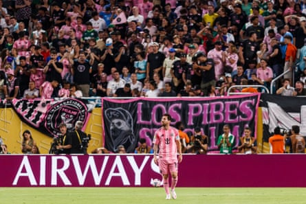

T he sight of thousands of Boca Juniors fans pouring onto the pristine Miami beach ahead of their Fifa Club World Cup opener against Benfica last week quickly went viral, with the white sands colloquially becoming known as “Boca beach”.
While the grand old Argentine club exited the tournament prematurely after a shock 1-1 draw with Auckland City’s collection of part-timers earlier this week, could Sydney’s world famous Bondi beach be next in line for the Boca treatment?
It’s a dream that could become reality should Football Australia get their way and host the next edition of club football’s new showpiece tournament.
Former CEO James Johnson initially flagged FA’s interest in hosting the tournament in 2023, when it was little more than a concept in Gianni Infantino’s mind, and rightly identified it as a huge growth opportunity for the game and positioning Australia at the front of the queue of nations looking to host come 2029.
Amid speculation at the time of a bid for the 2034 World Cup, which ultimately went to Saudi Arabia uncontested, when announcing their decision not to bid for that tournament Football Australia said it was “ambitious to bring more major tournaments to our shores”, including the Women’s Asian Cup in 2026, and then the 2029 Club World Cup.
Having since successfully secured the hosting rights for next year’s Women’s Asian Cup, which will take place in Sydney, Gold Coast and Perth next March, attention will soon shift to securing the Club World Cup. It would complete what FA are calling a “golden decade” for football which kicked off with the Women’s World Cup in 2023and will end with in Brisbane with the 2032 Olympic Games.
Lionel Messi has been one of the biggest draws of the tournament in the US.Photograph: Eurasia Sport Images/Getty Images
At this stage the next Club World Cup is scheduled for 2029 but speculation is rife that Fifa will change the cycle of their newly minted tournament from every four years to every two, potentially bringing the next tournament forward to 2027.
FA said this week that it remains interested and is keen to secure hosting rights to more tournaments. “The Fifa Club World Cup tournament in the United States has been a thrilling competition, bringing some of the world’s great clubs together, and demonstrating the global reach and power of football,” a spokesperson told Guardian Australia.
“The Fifa Women’s World Cup 2023 demonstrated Australia’s capability to host major global football tournaments of the highest quality. Football Australia is always looking at further opportunities to host major events, such as next year’s AFC Women’s Asian Cup, and will explore other potential opportunities as details of bidding processes become known.”
As tens of thousands of fans from all around the world have flocked to North America for this year’s tournament, particularly from South America, North Africa and Asia, eyes around the world have been opened to the potential of this competition – even with this one that is missing the pulling power of Liverpool, Arsenal or Barcelona.
While some games have been less attractive than others – the match between South Africa’s Mamelodi Sundowns and South Korea’s Ulsan HD attracted just 3,412 fans and some games have struggled to fill even smaller capacity MLS stadiums – others have shown what is possible when bringing together tribal fan bases from around the world.
Boca fans have turned stadiums into mini versions of their famed Bombonera, fans of Morocco’s Wydad Casablanca produced impressive flare and smoke displays, while there was a sea of pink in Miami as Lionel Messi inspired his Inter Miami side into the knockout rounds. Brazil’s Flamengo showed the strength of their support in the Americas, and even supporters of Japan’s Urawa Reds travelled in their thousands with colourful tifos and full-throated support.
While there was, and remains, scepticism from Europe as to the bonafides of the tournament and several kinks to be ironed out, increasingly there is a feeling it has been a great showcase of the strength of the club game around the world outside of the European stranglehold.
It is why Australia will face stiff competition to host the next edition of the tournament, with America keen to go again to embed the gains made in this tournament, while two of the co-hosts for the 2030 World Cup, Spain and Morocco, have separately put their hands up. So too Brazil.
The logistics of Australia hosting a month-long tournament in June and July, and the complications of stadium availability in the middle of AFL and NRL seasons, would need to be carefully considered, but there is little doubt that hosting the tournament would do wonders for football in Australia – not least because the host nation is guaranteed one spot, meaning at least one A-League club would take part and walk away with a minimum of $15m in prize money.
Whether it be Boca fans taking over Bondi, Flamengo fans occupying Federation Square or Europe’s elite arriving en masse, the thought of the world’s best taking over Australian cities and stadiums is a mouthwatering one.